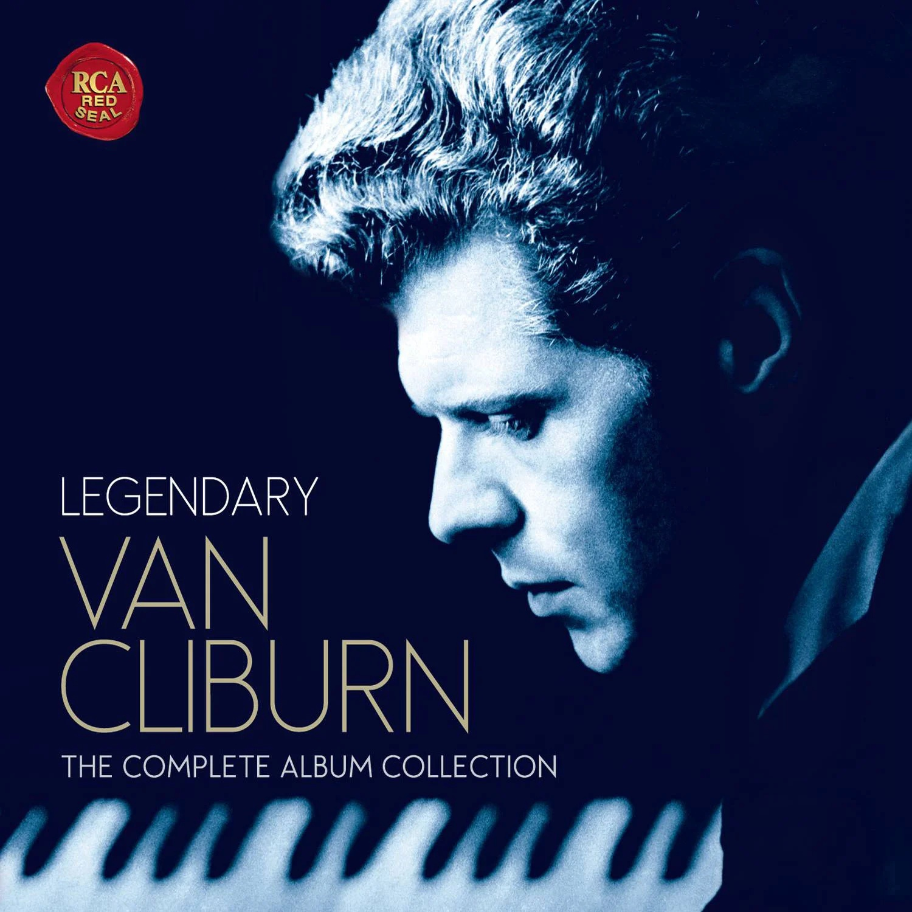
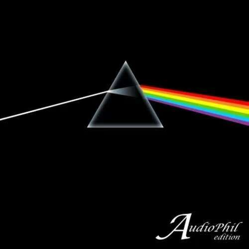

阅读
音乐

音乐是我生活中不可或缺的一部分，它就像空气和水一样，滋养着我的心灵。对我来说，音乐不仅是一种艺术形式，更是一种情感的表达和沟通方式。无论我处于喜怒哀乐的哪种情绪中，总能找到适合当下心情的音乐，它能与我共鸣，也能改变我的心境。
我喜欢的音乐
体味音乐，不在于“好听”，而是能否与其意境共鸣




德彪西 月光：当时是在阅读暮光之城的英文原著时看到的，伊丽莎白喜欢的歌。结果自己一听，觉得不错；后来几次在夜里回家的时候，听着也不觉得月光心慌慌，便喜欢上了。
The darkside of the moon：母庸质疑，高二晚自习有段时间每天听一次
just the two of us：高三从周末回家必听，jazz摇起来很带劲
回到过去：初中最喜欢的一首，现在也是周杰伦最喜欢的一首
旅行


旅行对我来说不仅仅是游览风景名胜，更是一种探索世界、认识自己的方式。我喜欢通过旅行去体验不同的文化，品尝不同的美食，结识不同的人，这些经历丰富了我的人生，也让我对世界有了更深刻的理解。
难忘的旅行经历
西藏之旅：那是我最难忘的一次旅行。当我第一次看到布达拉宫时，被它的宏伟和神圣深深震撼。在西藏，我看到了最纯净的蓝天和最虔诚的信徒，感受到了一种超越物质的精神力量。
日本京都之旅：京都的每一座寺庙和庭院都散发着独特的韵味，传统与现代在这里完美融合。我印象最深的是在一个雨天参观金阁寺，雨水打湿的金阁倒映在湖水中，美得像一幅画。
运动


我一直相信，健康的身体是幸福生活的基础，而运动则是保持身体健康的最佳方式。对我来说，运动不仅能锻炼身体，还能缓解压力，提升心情。无论是独自一人还是与朋友一起，运动总能给我带来快乐和满足感。
我喜欢的运动
跑步：跑步是我最常进行的运动。我喜欢早晨跑步，当清新的空气进入肺部，看着城市慢慢苏醒，那种感觉非常美好。
篮球：我喜欢和朋友们一起打篮球，这不仅能锻炼身体，还能增进友谊。篮球是一项团队运动，需要队员之间的配合和信任。
烹饪

烹饪对我来说是一种乐趣，也是一种放松的方式。我喜欢在厨房里忙碌的感觉，将各种食材巧妙地搭配在一起，创造出美味的菜肴，这种过程让我感到非常满足。对我来说，烹饪不仅是为了填饱肚子，更是一种生活的艺术。
我的拿手菜
- 红烧肉：这是我最拿手的一道菜，肥而不腻，入口即化
- 手作披萨：我喜欢自己做披萨饼底，搭配不同的配料
- 奶油蘑菇意面：creamy浓郁，香气四溢
- 提拉米苏：口感细腻，咖啡味浓郁
摄影


摄影对我来说是一种记录生活、表达自我的方式。通过镜头，我可以捕捉生活中的美好瞬间，记录下那些值得回忆的时刻。对我而言，摄影不仅是一门技术，更是一种观察世界的角度和态度。
我喜欢的摄影类型
纪实摄影：我喜欢记录日常生活中的真实瞬间，那些不经意的表情和动作往往最能打动人心。
风景摄影：旅行的时候，我最喜欢拍风景照。大自然的壮丽和美丽总能给我带来灵感。